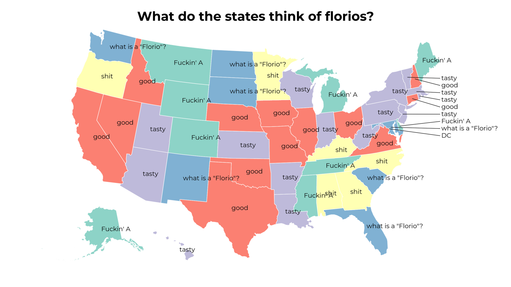
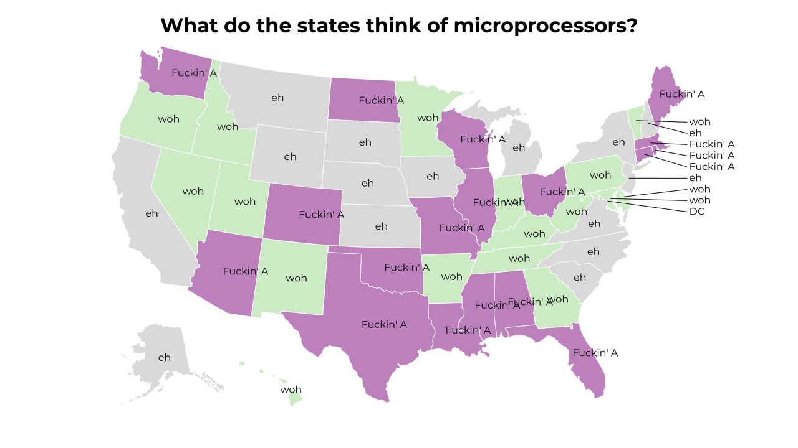
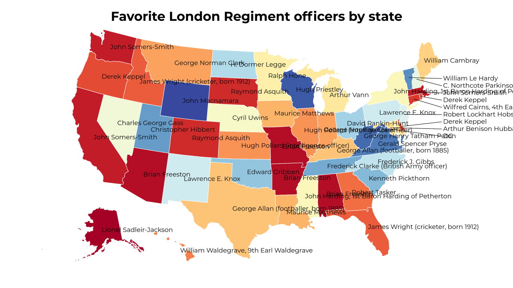
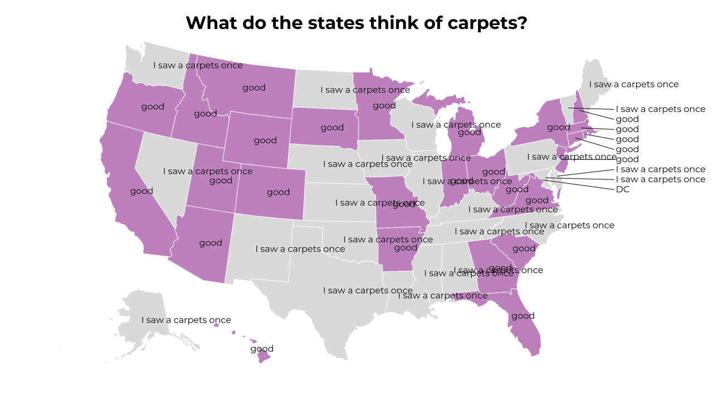
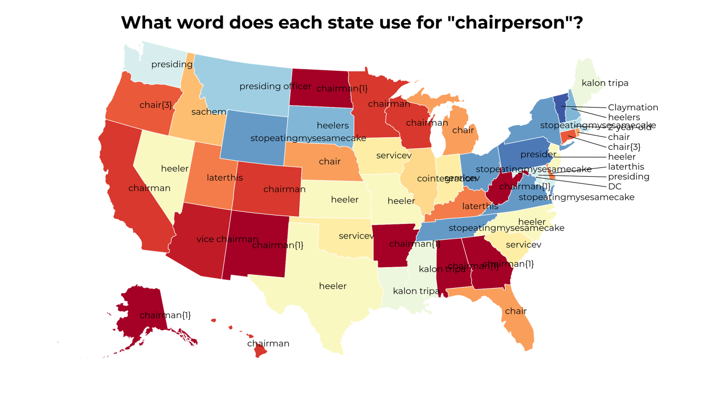
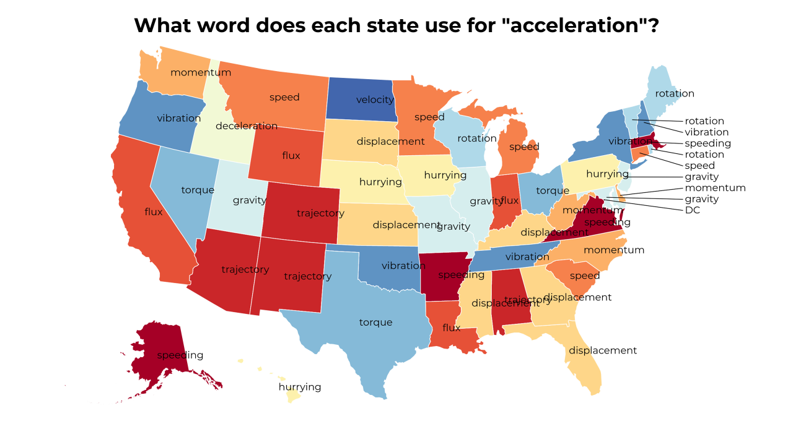
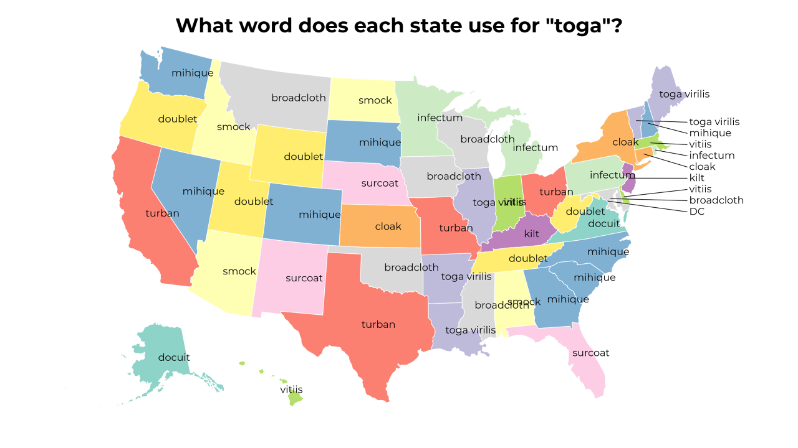
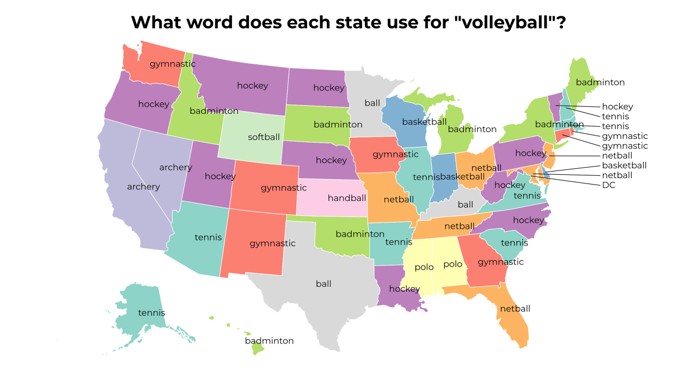

A Land of Contrasts
2018-4-30 11:30:18

What do the states think of florios?
2018-4-30 08:30:15

What do the states think of microprocessors?
2018-4-30 05:30:18

Favorite London Regiment officers by state
2018-4-30 02:30:17

What do the states think of carpets?
2018-4-29 23:30:17

What word does each state use for "chairperson"?
2018-4-29 20:30:17

What word does each state use for "acceleration"?
2018-4-29 17:30:22

What word does each state use for "toga"?
2018-4-29 14:30:16

What word does each state use for "volleyball"?
12
|
11
|
10
|
9
|
8
|
7
|
6
|
5
|
4
|
3
|
2
|
1
|
0